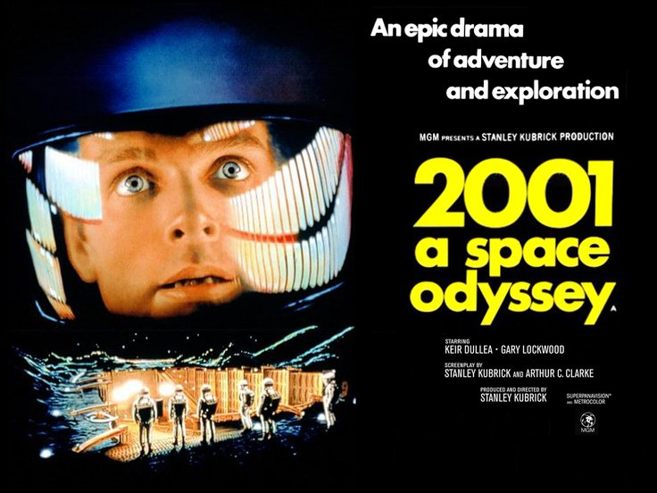

By the 1960's, passenger planes only take 6 hours to get from New York to Los Angeles. Greatly impacting things such as mail delivery.
In 2011, Ford is producing electric vehicles on the same assembly line as gas vehicles.
By the 1960's, email gets substantial use as a medium to communicate over digital devices.
Andy Warhol, Marilyn, 1967

2001: A Space Odyssey, 1968 (Film) Interstellar, 2014 (Film)
